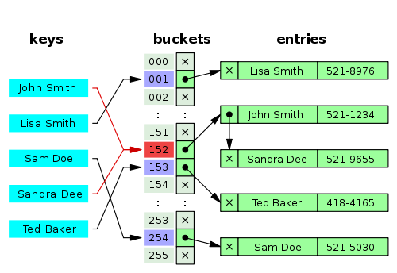

| Average | Worst Case | |
|---|---|---|
| Space | O(n) | O(n) |
| Get by key | O(1) | O(n) |
| Insert | O(1) | O(n) |
| Delete | O(1) | O(n) |
<dependency> <groupId>org.infinispan</groupId> <artifactId>infinispan-embedded</artifactId> <version>7.0.3.Final</version> </dependency>libraryDependencies += "org.infinispan" % "infinispan-embedded" % "7.0.3.Final"EmbeddedCacheManager cacheManager = new DefaultCacheManager(); Cache<String,String> cache = cacheManager.getCache(); cache.put(1, "data goes here");
<infinispan> <cache-container> <local-cache name="testCache"> <persistence> <leveldb-store path="/tmp/folder"/> </persistence> </local-cache> </cache-container> </infinispan>DefaultCacheManager cm = new DefaultCacheManager("infinispan.xml"); Cache<Integer, String> cache = cacheManager.getCache("testCache");
Configuration configuration = new ConfigurationBuilder()
.persistence()
.addStore(LevelDBStoreConfigurationBuilder.class)
.build();
DefaultCacheManager cm = new DefaultCacheManager(configuration);
Cache<Integer, String> cache = cm.getCache();
GlobalConfiguration globalCfg = new GlobalConfigurationBuilder()
.transport().defaultTransport()
.build();
Configuration cfg = new ConfigurationBuilder()
.clustering().cacheMode(CacheMode.REPL_SYNC)
.build();
EmbeddedCacheManager cm = new DefaultCacheManager(globalCfg, cfg);
Cache<Integer, String> cache = cm.getCache();
GlobalConfiguration globalCfg = new GlobalConfigurationBuilder()
.transport().defaultTransport()
.build();
Configuration configuration = new ConfigurationBuilder()
.clustering().cacheMode(CacheMode.DIST_SYNC)
.hash().numOwners(2).numSegments(100)
.build();
EmbeddedCacheManager cm = new DefaultCacheManager(globalConfiguration, configuration);
Cache<Integer, String> cache = cm.getCache();
Configuration configuration = new ConfigurationBuilder()
.indexing().index(Index.ALL)
.build();
EmbeddedCacheManager cm = new DefaultCacheManager(configuration);
Cache<Integer, DaySummary> cache = cm.getCache();
Configuration configuration = new ConfigurationBuilder()
.indexing().index(Index.LOCAL)
.addProperty("default.worker.execution", "async")
.build();
EmbeddedCacheManager cm = new DefaultCacheManager(configuration);
Cache<Integer, DaySummary> cache = cm.getCache();
Configuration configuration = new ConfigurationBuilder()
.indexing().index(Index.LOCAL)
.addProperty("default.worker.execution", "async")
.addProperty("default.directory_provider", "ram")
.build();
EmbeddedCacheManager cm = new DefaultCacheManager(configuration);
Cache<Integer, DaySummary> cache = cm.getCache();
Configuration configuration = new ConfigurationBuilder()
.indexing().index(Index.LOCAL)
.addProperty("default.worker.execution", "async")
.addProperty("default.directory_provider", "infinispan")
.build();
EmbeddedCacheManager cm = new DefaultCacheManager(configuration);
Cache<Integer, DaySummary> cache = cm.getCache();
Configuration configuration = new ConfigurationBuilder()
.indexing().index(Index.LOCAL)
.addProperty("default.directory_provider", "filesystem")
.addProperty("default.indexBase", "/path/to/index);
.build();
Configuration configuration = new ConfigurationBuilder()
.indexing().index(Index.LOCAL)
.addProperty("default.worker.execution", "async")
.addProperty("default.directory_provider", "infinispan")
.addProperty("default.indexmanager","near-real-time")
.build();
Configuration configuration = new ConfigurationBuilder()
.indexing().index(Index.LOCAL)
.addProperty("default.worker.execution", "async")
.addProperty("default.directory_provider", "infinispan")
.addProperty("default.indexmanager",
"org.infinispan.query.indexmanager.InfinispanIndexManager")
.build();
EmbeddedCacheManager cm = new DefaultCacheManager(configuration);
Cache<Integer, DaySummary> cache = cm.getCache();
public class DaySummary { private Station station; private Integer year; private Integer month; private Integer day; Float avgTemp; } public class Station { private Integer wban; private String name; private Country country; private Float latitude; private Float longitude; }public class Country { private String name; private String code; }
@Indexed
public class DaySummary {
@IndexedEmbedded
private Station station;
@Field(store = Store.YES, analyze = Analyze.NO)
private Integer year;
@Field(store = Store.YES, analyze = Analyze.NO)
private Integer month;
private Integer day;
@Field(store = Store.YES)
Float avgTemp;
Document
Field("station.name")
Field("station.usaf")
NumericField("year", Stored.YES, Indexed.NO)
NumericField("month", Stored.YES, Indexed.NO)
@Indexed
@AnalyzerDef(name = "lowercaseKeyword",
tokenizer = @TokenizerDef(factory = KeywordTokenizerFactory.class),
filters = {
@TokenFilterDef(factory = LowerCaseFilterFactory.class)
}
)
public class Country {
@Analyzer(definition = "lowercaseKeyword")
@Field(store = Store.YES)
private String name;
@Field(store = Store.YES, analyze = Analyze.NO)
private String code;
QueryParser qp = new QueryParser("default", new StandardAnalyzer());
Query luceneQ = qp
.parse("+station.name:airport +year:2014 +month:12 +(avgTemp < 0)");
CacheQuery cq = Search.getSearchManager(cache)
.getQuery(luceneQ, DaySummary.class);
List<Object> results = query.list();
import org.apache.lucene.search.MatchAllDocsQuery;
MatchAllDocsQuery allDocsQuery = new MatchAllDocsQuery();
CacheQuery query = Search.getSearchManager(cache)
.getQuery(allDocsQuery, DaySummary.class);
int count = query.getResultSize();
SearchIntegrator searchFactory = Search.getSearchManager(cache)
.getSearchFactory();
IndexReader indexReader = searchFactory
.getIndexReaderAccessor().open(DaySummary.class);
IndexSearcher searcher = new IndexSearcher(indexReader);
Cache<Integer, DaySummary>
configuration.set("mapreduce.ispn.remote.cache.host", "10.0.0.2")
configuration.set("mapreduce.ispn.input.cache.name", "in-cache");
configuration.set("mapreduce.ispn.output.cache.name", "out-cache");
JobConf jobConf = new JobConf(configuration, Main.class);
jobConf.setJobName("wordcount");
jobConf.setOutputKeyClass(Text.class);
jobConf.setOutputValueClass(IntWritable.class);
jobConf.setMapperClass(MapClass.class);
jobConf.setReducerClass(ReduceClass.class);
jobConf.setInputFormat(InfinispanInputFormat.class);
jobConf.setOutputFormat(InfinispanOutputFormat.class);
JobClient.runJob(jobConf);
Peter Cook
http://animateddata.co.uk